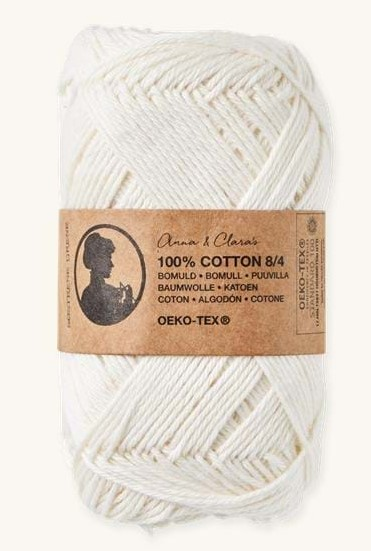
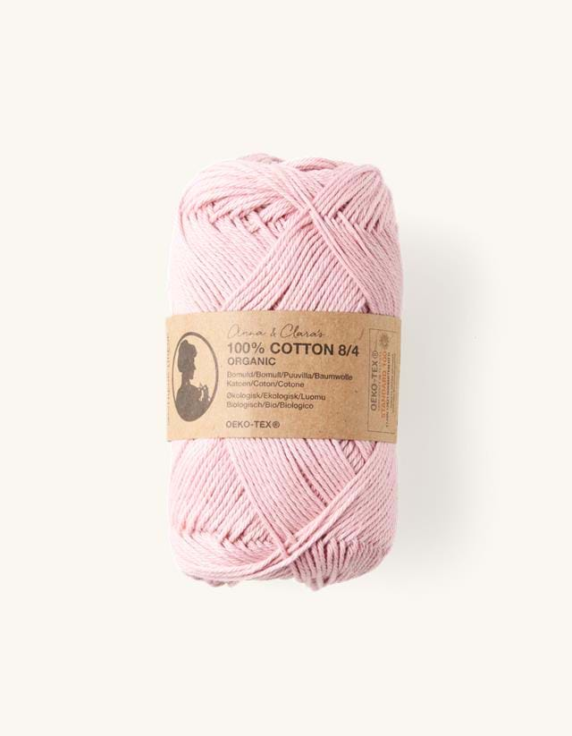
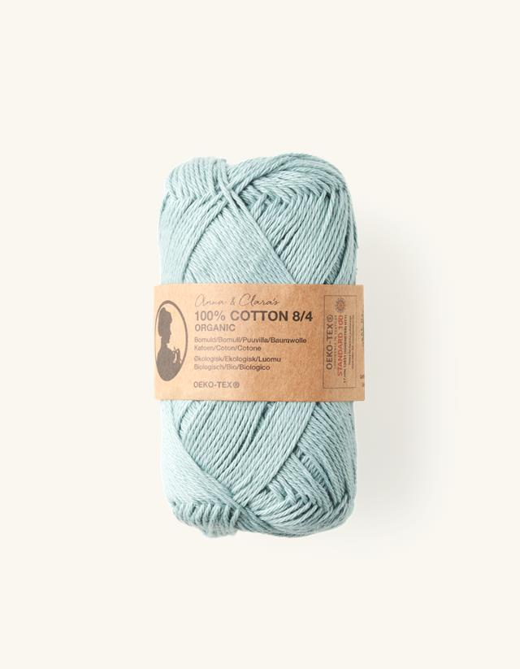
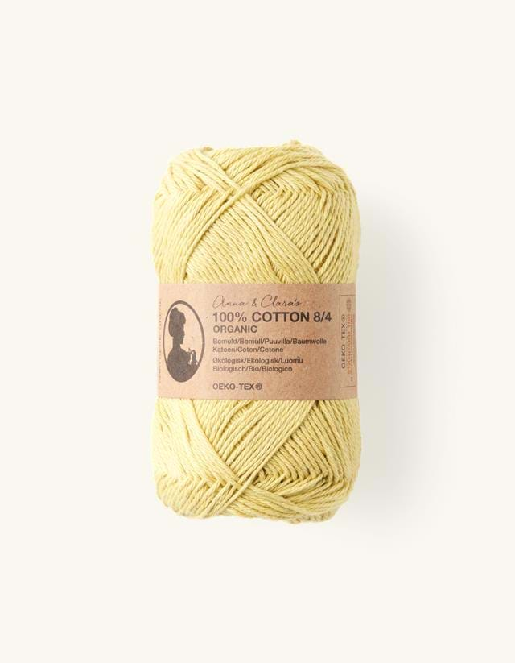
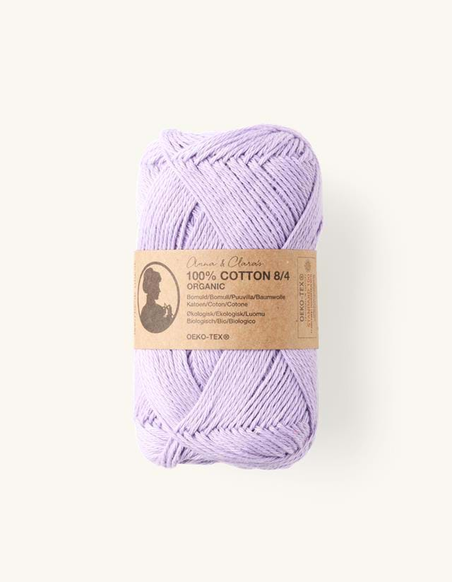
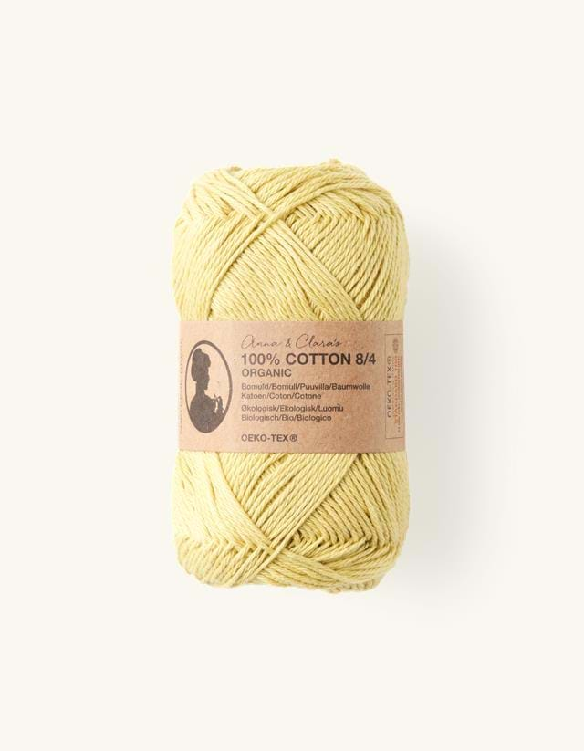
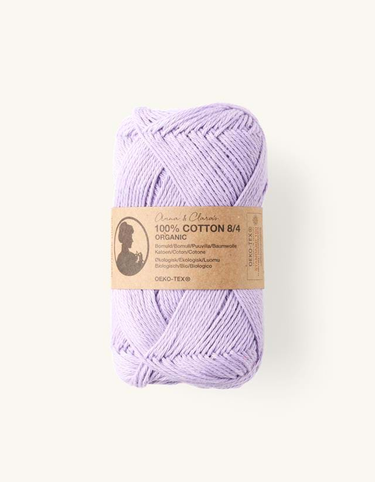

Ik gebruik voor het maken van de armbandjes altijd katoengaren. Die koop ik altijd bij Sostrene Grene. Ik vind dat zij mooie kleuren katoengarenverkopen en ze kosten maar € 1,82. Ik vind dit heel erg weinig voor een bolletje katoengaren. Hieronder staan een paar voorbeelden, als je op de afbeelding klikt kom je bij de website waarop je ze kunt kopen:
   


